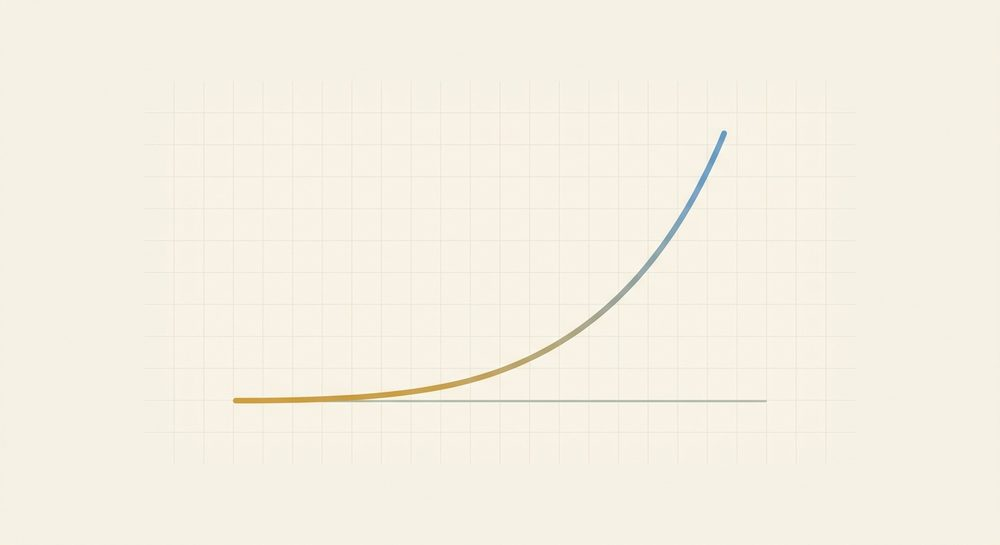

Sequences & Exponential Functions
Fresh, parallel-form problems with full worked solutions — more reps for the skills in this unit, kept separate from the textbook's own problems.

Lesson 9.1: Arithmetic & geometric sequences as functions
The arithmetic sequence 7, 11, 15, 19, ... continues with the same rule. Find a₁₂ using the explicit rule a_n = a₁ + (n−1)d — don't list all twelve terms.
Worked solutionTry it first, then open.
First read off the pieces. The first term is a₁ = 7. The common difference is the constant jump: 11−7 = 4, 15−11 = 4, 19−15 = 4, so d = 4 (and the constant difference confirms it's arithmetic). To reach the 12th term you start at a₁ and take 11 steps (not 12 — term 1 takes zero steps), so n−1 = 11:
$$a_{12} = 7 + (12-1)\cdot 4 = 7 + 11\cdot 4 = 7 + 44 = 51.$$
So a₁₂ = 51. The whole point of the explicit rule is skipping the listing — 11·4 = 44 added once does the work of eleven separate +4 steps.
Answer: 51
The geometric sequence 3, 12, 48, 192, ... continues with the same rule. Find a₅ using the explicit rule a_n = a₁ · r^(n−1).
Worked solutionTry it first, then open.
Read off the pieces. The first term is a₁ = 3. The common ratio is the constant ×-factor: 12/3 = 4, 48/12 = 4, 192/48 = 4, so r = 4 (the constant ratio confirms geometric). The 5th term is 4 steps past the first, so the exponent is n−1 = 4:
$$a_5 = 3\cdot 4^{\,5-1} = 3\cdot 4^{4} = 3\cdot 256 = 768.$$
So a₅ = 768. Note the exponent is 4, not 5 — multiplying by r happens only on the four steps from term 1 to term 5.
Answer: 768
Is 64, 48, 36, 27, ... arithmetic or geometric? Prove it from the numbers (compute both the differences and the ratios), and give d or r.
Worked solutionTry it first, then open.
Don't go by feel — the list is shrinking, but shrinking can be either type. Compute BOTH diagnostics between consecutive terms.
Differences: 48−64 = −16, 36−48 = −12, 27−36 = −9. These are NOT equal, so it is not arithmetic.
Ratios: 48/64 = 3/4, 36/48 = 3/4, 27/36 = 3/4. These ARE all the same. A constant ratio means the sequence is geometric with r = 3/4 (= 0.75).
So it's geometric, r = 3/4: each term is three-quarters of the one before. (This is the headline trap of the unit — always check which one, the jump or the ×-factor, actually stays constant.)
Answer: geometric, r = 3/4 (= 0.75); the ratios 48/64, 36/48, 27/36 are all 3/4 while the differences −16, −12, −9 are not constant
A sequence is given by the recursive rule a₁ = 50, a_n = a_{n−1} − 7. Read d and a₁ straight off the recursive form, then use the explicit rule to find a₉.
Worked solutionTry it first, then open.
The recursive rule a_n = a_{n−1} − 7 says 'subtract 7 each step,' so the common difference is d = −7 (keep the negative sign attached — it's a descending arithmetic sequence). The first term is stated separately: a₁ = 50. Those are exactly the two numbers the explicit rule a_n = a₁ + (n−1)d needs. The 9th term is 8 steps past the first:
$$a_9 = 50 + (9-1)(-7) = 50 + 8(-7) = 50 - 56 = -6.$$
So a₉ = −6. The sequence passes through 0 and goes negative, which is fine — d just stays −7 the whole way.
Answer: -6
Lesson 9.2: Exponential growth & decay; linear vs. exponential
Evaluate the exponential function y = 6·2ˣ at x = 4.
Worked solutionTry it first, then open.
The variable is in the exponent, so handle the power first, then multiply by the starting amount a = 6 (do the exponent before the multiplication — it's a·(bˣ), not (a·b)ˣ):
$$y = 6\cdot 2^{4} = 6\cdot 16 = 96.$$
So y = 96. Here a = 6 is the value at x = 0 (since 2⁰ = 1, f(0) = 6) and b = 2 means it doubles each step — by x = 4 it has doubled four times: 6 → 12 → 24 → 48 → 96.
Answer: 96
A quantity loses 25% of its value each step. Is this growth or decay, and what is the factor b in y = a·bˣ? Why isn't b = 0.25?
Worked solutionTry it first, then open.
Turn the percent change into a factor. Losing 25% means you KEEP the other 75% of what you had, so each step you multiply by 0.75:
$$b = 1 - \frac{25}{100} = 1 - 0.25 = 0.75.$$
Since 0 < b < 1, this is decay. It is not 0.25, because b is what you keep-and-carry-forward (75%), not the slice you lose (25%). A factor of 0.25 would mean losing 75% each step, a much faster decay.
Answer: decay; b = 0.75 (since −25% → 1 − 0.25 = 0.75)
Is the table of outputs 5, 15, 45, 135, ... linear or exponential? Name the giveaway and give the slope or the factor b.
Worked solutionTry it first, then open.
Apply the same difference-vs-ratio test, now to decide the function family.
Differences: 15−5 = 10, 45−15 = 30, 135−45 = 90 — NOT constant, so not linear.
Ratios: 15/5 = 3, 45/15 = 3, 135/45 = 3 — a constant ratio. A constant ratio (multiply by the same each step) is the signature of an exponential function, with that ratio as the base: b = 3.
So the table is exponential, b = 3. (Linear would show a constant difference instead; here the jumps themselves keep tripling.)
Answer: exponential; constant ratio ×3 (5, 15, 45, 135), b = 3; the differences 10, 30, 90 are not constant
$2500 is invested at +6% per year, so y = 2500·bˣ with x in years. Find b from the percent, then compute the balance after 3 years (round money to the nearest cent at the end).
Worked solutionTry it first, then open.
First turn +6% into a factor: you keep 100% and add 6%, so b = 1 + 0.06 = 1.06 (not 0.06). The model is y = 2500·1.06ˣ, where a = 2500 is the deposit before any interest. After 3 years:
$$y = 2500\cdot 1.06^{3} = 2500\cdot 1.191016 = 2977.54.$$
Keep the exact value 1.06³ = 1.191016 through the multiplication and round only at the end: 2500·1.191016 = 2977.54 exactly to the cent. So the balance is $2977.54.
Answer: 2977.54
Mixed review
Problems that mix skills from across the unit — good for spacing earlier work back in.
The geometric sequence 5, 10, 20, 40, ... continues with the same rule. Find a₆.
Worked solutionTry it first, then open.
Ratios: 10/5 = 2, 20/10 = 2, 40/20 = 2, so it's geometric with a₁ = 5 and r = 2. The 6th term is 5 steps past the first, so use exponent n−1 = 5:
$$a_6 = 5\cdot 2^{\,6-1} = 5\cdot 2^{5} = 5\cdot 32 = 160.$$
So a₆ = 160.
Answer: 160
The arithmetic sequence 8, 14, 20, 26, ... continues with the same rule. Find a₁₀ with the explicit rule.
Worked solutionTry it first, then open.
Differences: 14−8 = 6, 20−14 = 6, 26−20 = 6, so it's arithmetic with a₁ = 8 and d = 6. The 10th term is 9 steps past the first:
$$a_{10} = 8 + (10-1)\cdot 6 = 8 + 9\cdot 6 = 8 + 54 = 62.$$
So a₁₀ = 62. (Compare with a₆ in R.T1: that one multiplied by 2 each step and exploded; this one only adds 6 each step — constant ratio vs. constant difference.)
Answer: 62
Classify 81, 27, 9, 3, ... as arithmetic or geometric by checking BOTH the differences and the ratios, and give d or r.
Worked solutionTry it first, then open.
The list shrinks, but check which diagnostic is actually constant.
Differences: 27−81 = −54, 9−27 = −18, 3−9 = −6 — not constant, so not arithmetic.
Ratios: 27/81 = 1/3, 9/27 = 1/3, 3/9 = 1/3 — constant. So it is geometric with r = 1/3: each term is one-third of the previous one. (A decreasing list can be either type; the constant ratio settles it.)
Answer: geometric, r = 1/3; the ratios 27/81, 9/27, 3/9 are all 1/3 while the differences −54, −18, −6 are not constant
A town of 4000 people shrinks 10% each year, so y = 4000·bˣ with x in years. Find b from the percent, then the population after 2 years.
Worked solutionTry it first, then open.
Shrinking 10% means keeping 90%, so b = 1 − 0.10 = 0.90 (decay, since 0 < b < 1). With a = 4000 the starting population:
$$y = 4000\cdot 0.9^{2} = 4000\cdot 0.81 = 3240.$$
So after 2 years there are 3240 people. (Reading b back as a percent: b = 0.9 means −10% per year — keep 90%, lose 10%.)
Answer: 3240
Two sequences both start 3, ... — one is arithmetic with d = 3, the other geometric with r = 3. Find the 4th term of EACH, and report the geometric a₄ as your answer. Where do the two split apart?
Worked solutionTry it first, then open.
Build both from the same start a₁ = 3.
Arithmetic (add 3 each step): 3 → 6 → 9 → 12, so a₄ = 3 + (4−1)·3 = 3 + 9 = 12.
Geometric (multiply by 3 each step): 3 → 9 → 27 → 81, so a₄ = 3·3^(4−1) = 3·3³ = 3·27 = 81.
They are identical at term 1 (both 3) and split immediately at term 2 (6 vs. 9), with the geometric pulling away fast: by term 4 it's 81 versus 12. The geometric answer is a₄ = 81. This is the unit's headline contrast — adding the same each step (constant difference) versus multiplying by the same each step (constant ratio).
Answer: 81